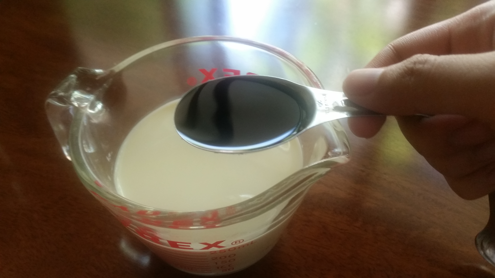

Ingredients
- ¾ cup or 168 g butter, unsalted (for the batter dough)
- ¾ cup or 150 g granulated sugar (for the batter dough)
- 1 ½ cups confectioner powdered sugar
- 1 tablespoon vanilla extract (McCormick)
- 2 1/3 cups bread purpose flour
- 1 cup or 250 ml full cream milk, room temperature (Bear Brand – for the batter dough)
- 4 medium eggs at room temperature
- 2 teaspoon or 10g baking powder (Queen Double Acting Baking Powder)
- 1 teaspoon or 5g iodized fine salt (McCormick)
- 231 g Cavendish banana
- 4 tablespoons brewed Blend 45 instant coffee (for the frosting)
- ¼ cup or 57 g butter, unsalted (for the frosting)
Procedure
- In a large mixing bowl, I used an egg whisk to manually cream the butter, sugar together until light and fluffy.
- I measured one cup of milk on a glass beaker and put the vanilla extract. I cracked open three eggs and placed them on a glass bowl. 
- I poured the milk containing the vanilla extract on the mixing bowl containing the dry ingredients, butter & sugar, and then included the eggs. I mixed them together with a whisk until thoroughly combined.
- I added in the bread flour and baking powder, salt after sifting with a sieve. I mixed all the ingredients until just combined. I also scraped the sides and the bottom of the bowl to make sure everything gets mixed in.
- I dissolved 8 g blend45 coffee powder on 1 cup or 250 ml water heated in a thermos.
- I put 1 scoopful of the batter on a cupcake sheet cooked by batches (six cupcakes per batch) on a baking tray at the top level rack in the oven pre-heated to 175 degrees Celsius.:
- Batch #1 – 16:30 minutes
- Batch #2 – 15:30 minutes
- Batch #3 – 14:30 minutes
- Batch #4 – 13:30 minutes
- I removed every batch of cupcakes that were baked from the oven and transferred to a steel wire rack to cool completely.
- I sliced the Cavendish bananas and mashed with a potato masher. Then I stored the bananas in the refrigerator for about 30 minutes to bring out their vanilla flavor. Each bowl had 141 bananas.
- For the frosting, I mixed together the confectioner sugar, the Cavendish bananas from the refrigerator, brewed instant coffee, and butter:
- Frosting Mixture #1: 1/8 unsalted butter + ¾ cup confectioner sugar + 2 tablespoons brewed Blend 45 instant coffee + 124 g mashed Cavendish bananas
- Frosting Mixture #2: 1/8 unsalted butter + ¾ cup confectioner sugar + 2 tablespoons brewed Blend 45 instant coffee + 74 g mashed Cavendish bananas
- I placed around one table spoon of the filling on top of each baked cupcake and cooled all the cupcakes in the refrigerator.
- Storage time: Saturday 6:00 PM Monday 4:45 PM


Feedback
- Batch# 1
- Texture:
- Taste/Flavor:
- Appearance:
- Batch# 2
- Texture:
- Taste:
- Appearance:
- Batch# 3
- Texture:
- Taste:
- Appearance:
- Batch# 4
- Texture:
- Taste:
- Appearance:
Recommendations
References
- Olson, A. (2018). Bake with Anna Olson. Fluffy Vanilla Cupcakes. Retrieved from http://www.bakewithannaolson.com/fluffy-vanilla-cupcakes.html
- Stewart, M. (2018). martha stewart. Vanilla Frosting. Retrieved from https://www.marthastewart.com/341302/vanilla-frosting
- Farnsworth, R. (2018). The Stay at Home Chef. THE MOST AMAZING VANILLA CUPCAKE RECIPE. Retrieved from https://thestayathomechef.com/vanilla-cupcake-recipe/
- Carol. (2018). allrecipes. Coffee Icing. Retrieved from https://www.allrecipes.com/recipe/7674/coffee-icing/
COPYRIGHT 2018 ALL RIGHTS RESERVED. THE FOODIE CRAFTSMAN. This website is for educational purposes only. CONTACT US Email: thefoodiecraftsman@gmail.com | Tel: +639178151032